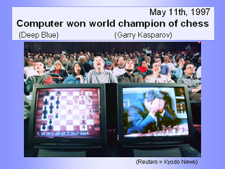

Milestones in Artificial Intelligence

On 11 May 1997, Deep Blue became the first computer chess-playing system to beat a reigning world chess champion, Garry Kasparov. The super computer was a specialized version of a framework produced by IBM, and was capable of processing twice as many moves per second as it had during the first match (which Deep Blue had lost), reportedly 200,000,000 moves per second. The event was broadcast live over the internet and received over 74 million hits.In 2005, a Stanford robot won the DARPA Grand Challenge by driving autonomously for 131 miles along an unrehearsed desert trail. Two years later, a team from CMU won the DARPA Urban Challenge by autonomously navigating 55 miles in an Urban environment while adhering to traffic hazards and all traffic laws.[135] In February 2011, in a Jeopardy! quiz show exhibition match, IBM's question answering system, Watson, defeated the two greatest Jeopardy! champions, Brad Rutter and Ken Jennings, by a significant margin.
These successes were not due to some revolutionary new paradigm, but mostly on the tedious application of engineering skill and on the tremendous power of computers today. In fact, Deep Blue's computer was 10 million times faster than the Ferranti Mark 1 that Christopher Strachey taught to play chess in 1951. This dramatic increase is measured by Moore's law, which predicts that the speed and memory capacity of computers doubles every two years. The fundamental problem of "raw computer power" was slowly being overcome.
- Psychology
- Biology
- Philosophy
- Logic
- Linguistics
- Art, Music, Literature ... and Creativity
- Economics, Politics, Sociology, Business Management, etc. ...